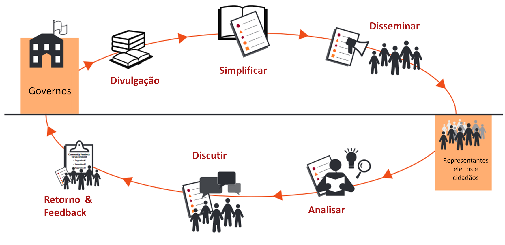

Como e onde a Universidade escolhe gastar dinheiro público é fundamental para todos os cidadãos e molda a relação do Estado com a sociedade. Em muitos aspectos, a transparência nessa área é fundamental para a prestação de contas em todas as outras áreas. Quando os orçamentos e os processos orçamentais são abertos e transparentes, os cidadãos têm a oportunidade de participar no seu desenvolvimento, o que pode conduzir a uma utilização mais eficiente e eficaz dos recuros. Eles também podem exigir mais do Estado.
Quando envio o meu filho para o mercado com 10 reais para comprar algo, eu exijo uma conta do dinheiro que eu lhe dei quando ele retorna para casa. Da mesma forma, quando a Universidade gasta o meu dinheiro, tenho o direito de pedir uma contabilidade dessas despesas. - Diana dos Santos, Mãe
Ao longo da última década, surgiram em uma grande variedade de países iniciativas para promover a transparência nos orçamentos públicos. Sua experiência produziu uma riqueza de ferramentas bem-sucedidas para o controle social do orçamento. Agora é a vez da Unirio.
Estamos promovendo a transparência orçamentária por meio de uma plataforma de supervisão interativa do orçamento da Unirio.
O ciclo de transparência de acordo com o Banco Mundial pode ser visto na figura abaixo 
Nesse site buscamos prover os atores (alunos, técnicos e professores) da Universidade com informações objetivas sobre o orçamento, de modo a facilitar o controle, a transparência e a tomada de decisão;
O portal da Transparência tem informações sobre o orçamento executado pela Unirio em 2016. A fonte dos dados é SIAFI.
Nesse site temos quatro abas:
Na primeira aba temos dois tipos de gráficos. Esses dois gráficos são interativos. isso é, podem ser modificados no sidebar “Comandos dos Gráficos”. O primeiro tipo é chamado de Treemap onde o tamanho da área representa o valor gasto em 2016. Já o segundo, permite comparar o valor empenhado, liquidado e pago.
Na segunda aba, podemos visualizar o banco de dados e sua estrutura. Para ver todo o banco de dados é necessário arrastar a barra lateral até o fim. Como é um banco de dados com 108 linhas, podemos arrasta-lo até esse número.
Na terceira aba, apresentamos uma nota explicativa com os principais conceitos do orçamento público. Nesse item há o glossário explicando o que é um empenho e o que são as categorias de análise possíveis (por exemplo: o que é o Elemento de despesa).
Finalmente, na última aba, há um exemplo de análise do orçamento de 2016 e um infográfico com alguns resultados.
O site pode ser visto nesse link: Transparência